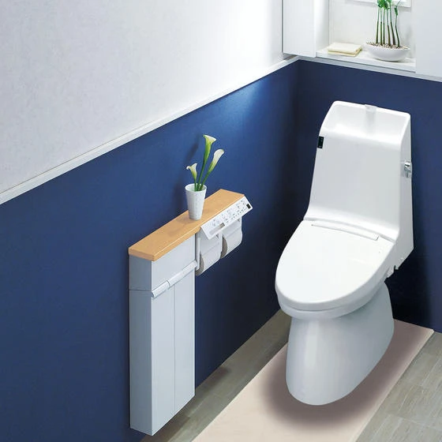
トイレリフォーム
こんにちは 富山県で自然素材にこだわった家づくりをしている 「フジ創アイノス」です。 いつもありがとうございます。 リフォームは、部屋だけではない。。 トイレもリフォームしたい人、必見。 トイレリフォームについて書いてい
続きを読む →FUJISOU AINOS JOURNAL
家づくりのこと、暮らしのこと。
日々の想いを、お伝えします。
新しい記事から 10・40ページ

こんにちは 富山県で自然素材にこだわった家づくりをしている 「フジ創アイノス」です。 いつもありがとうございます。 リフォームは、部屋だけではない。。 トイレもリフォームしたい人、必見。 トイレリフォームについて書いてい
続きを読む →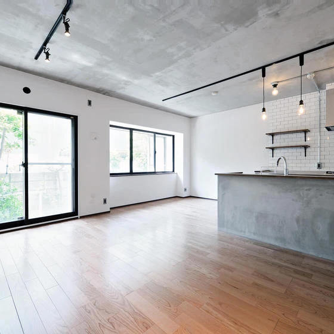
こんにちは 富山県で自然素材にこだわった家つくりをしている 「フジ創アイノス」です。 いつもありがとうございます。 戸建てリノベーションの避けられない３つのデメリットをご紹介いたします。 解決策もご紹介いたします。 １，
続きを読む →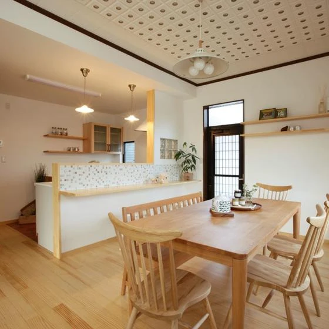
こんにちは 富山県で自然素材にこだわった家づくりをしている 「フジ創アイノス」です。 いつもありがとうございます。 リフォーム工事のときの注意をご紹介いたします。 １，リフォーム工事中に起こりやすいトラブル 1-1 打ち
続きを読む →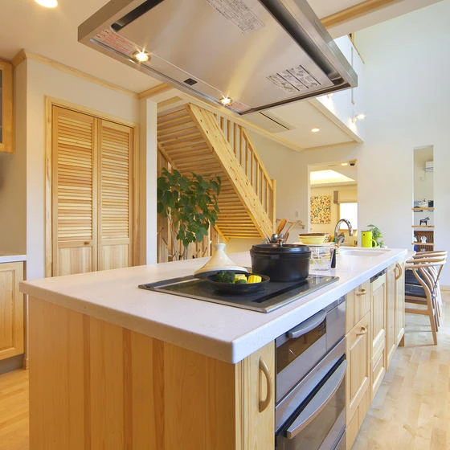
こんにちは 富山県で自然素材にこだわった家づくりをしている 「フジ創アイノス」です。 いつもありがとうございます。 今日は、空き家リノベーションについてご紹介いたします。 １，空き家リノベーション相場 ・空き家リノベーシ
続きを読む →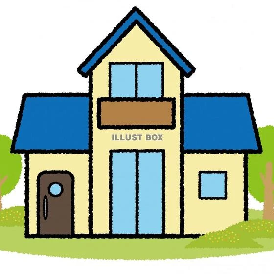
こんにちは 富山県で自然素材にこだわった家づくりをしている 「フジ創アイノス」です。 いつもありがとうございます。 一戸建てにかかる維持費についてご紹介いたします。 マンションと比較して見ました。 １，一戸建てでかかる維
続きを読む →こんにちは 富山県で自然素材にこだわった家づくりをしている 「フジ創アイノス」です。 いつもありがとうございます。 土地探しにかかる時間をご紹介いたします。 土地探しの流れ、失敗しないポイント。 ・土地探しにかかる期間は
続きを読む →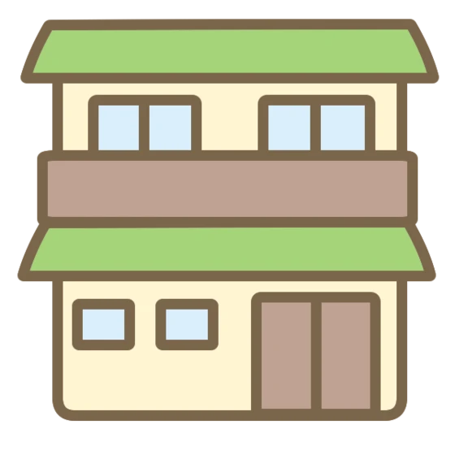
こんにちは 富山県で自然素材にこだわった家づくりをしている 「フジ創アイノス」です。 今日は、直接中古住宅見学へ行ってきたので その感想を書きたいと思います。 この会社に入社して、初めて中古住宅₍売り物件₎見学してきまし
続きを読む →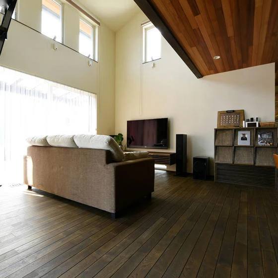
こんにちは 富山県で自然素材にこだわった家づくりをしている 「フジ創アイノス」です。 いつもありがとうございます。 季節の変わり目にピッタリな温熱環境をご紹介いたします。 暑い夏、寒い冬も快適に暮らすために。。 身体に負
続きを読む →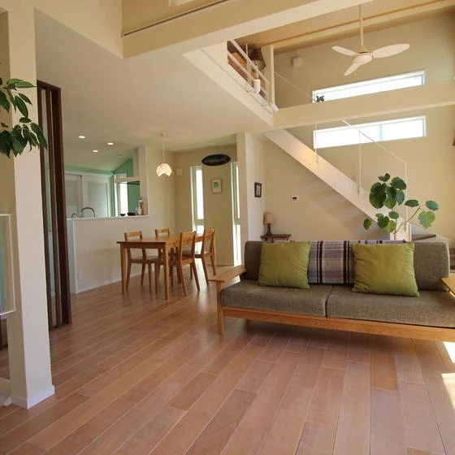
こんにちは 富山県で自然素材にこだわった家づくりをしている 「フジ創アイノス」です。 いつもありがとうございます。 間取り基準3大要素をご紹介いたします。 １，３つの空間を基準に、暮らし動線を考える。 「リビング」「玄関
続きを読む →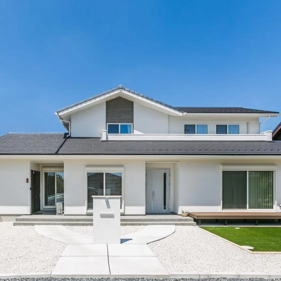
こんにちは 富山県で自然素材にこだわった家づくりをしている 「フジ創アイノス」です いつもありがとうございます。 今日は、二世帯住宅について。。です。 二世帯住宅100坪の間取りライフスタイル。 親世帯、子世帯が同居する
続きを読む →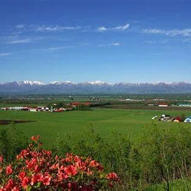
こんにちは 富山県で自然素材にこだわった家づくりをしている 「フジ創アイノス」です いつもありがとうございます。 今回は、土地選びのポイントなどをご紹介いたします。 土地見学で重要なのは、その土地での暮らしを具体的に。。
続きを読む →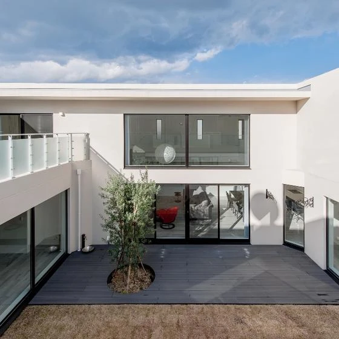
こんにちは 富山県で自然素材にこだわった家づくりをしている 「フジ創アイノス」です。 いつもありがとうございます。 今日は高級住宅の一部をご紹介いたします。 コートハウスのメリットとデメリットについて。 中庭のある家の設
続きを読む →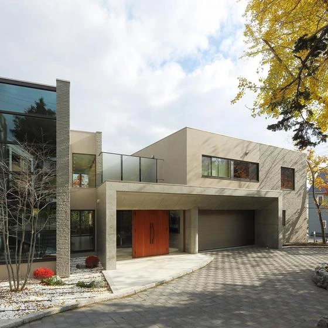
こんにちは 富山県で自然素材にこだわった家づくりをしている 「フジ創アイノス」です。 いつもありがとうございます。 今日は、夢の高級住宅についてご紹介します。 それは、 高級住宅の外観デザインを例としていくつか上げていき
続きを読む →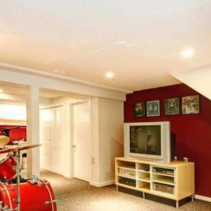
こんにちは 富山県で自然素材にこだわった家づくりをしている 「フジ創アイノス」です。 いつもありがとうございます。 注文住宅の地下について書いていきます。 注文住宅の地下室について、、 地下室をどう活用するか❔ 。注文住
続きを読む →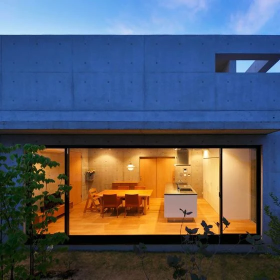
こんにちは 富山県で自然素材にこだわった家づくりをしている 「フジ創アイノス」です。 いつもありがとうございます。 コンクリート住宅の坪単価について。。 コンクリート造で建てる高級住宅。 ・憧れのコンクリート住宅、平均的
続きを読む →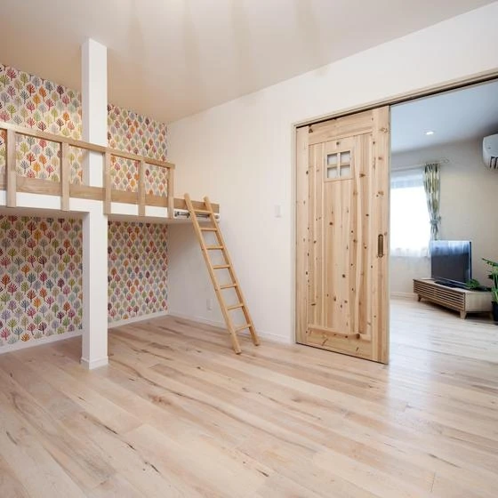
こんにちは。 富山県で自然素材にこだわった家づくりをしている 「「フジ創アイノス」です。 いつもありがとうございます。 今日は子供部屋リフォームのことについて。 子供部屋をリフォームしたいときありませんか❔ このリフォー
続きを読む →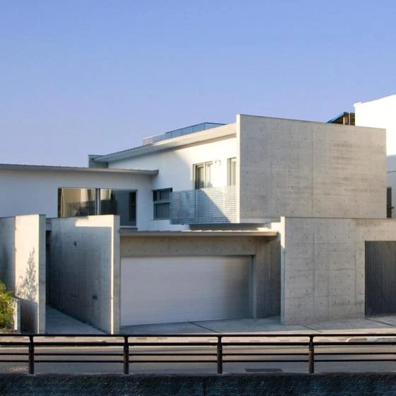
こんにちは 富山県で自然素材にこだわった家づくりをしている 「フジ創アイノス」です。 いつもありがとうございます。 今日は、コンクリート住宅の欠点をお伝えいたします。 １，コンクリート住宅欠点３つ 1-1 外気の温度変化
続きを読む →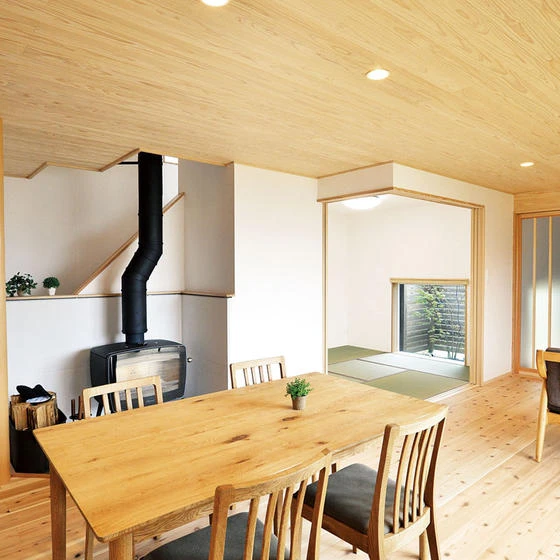
こんにちは。 富山県で自然素材にこだわった家づくりをしている 「フジ創アイノス」です。 いつもありがとうございます。 今日は、注文住宅その他快適性というのを更新していきます。 理想の注文住宅で快適に過ごすための機能として
続きを読む →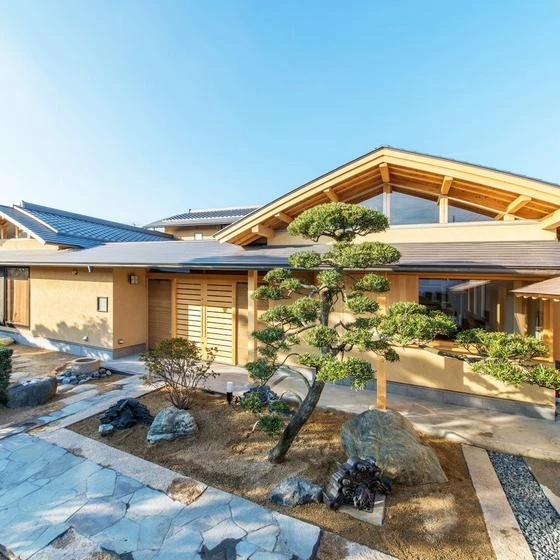
こんにちは。 富山県で自然素材にこだわった家づくりをしている 「フジ創アイノス」です。 いつもありがとうございます。 今日は、夫婦2人のセカンドライフ住宅について、お伝えいたします。 セカンドライフを楽しむ平屋の家。 注
続きを読む →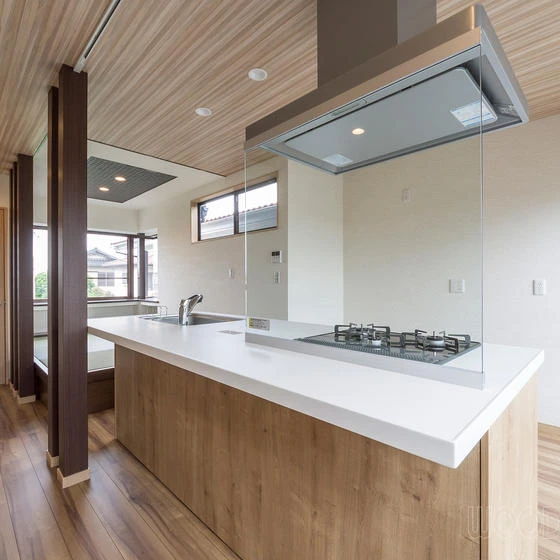
こんにちは 富山県で自然素材にこだわった家づくりをしている 「フジ創アイノス」です。 いつもありがとうございます。 実家をおしゃれ、住みやすくリフォームしませんか❔ １，実家リフォームのポイント ・親も子供の喜ぶリフォー
続きを読む →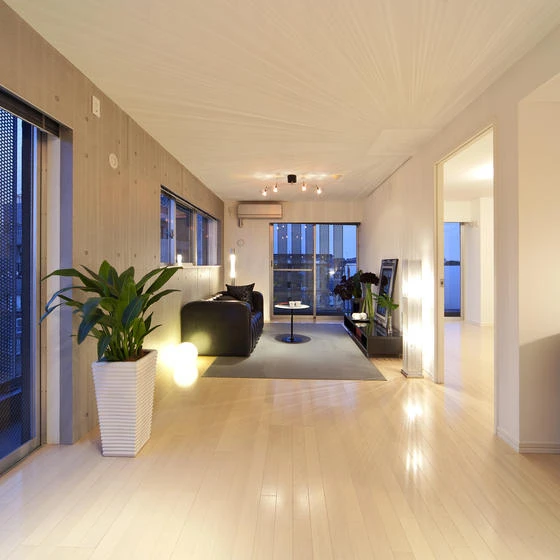
こんにちは 富山県で自然素材にこだわった家づくりをしている 「フジ創アイノス」です。 いつもありがとうございます。 今日は、家の照明について。 「間接照明」という言葉。 １，間接照明とは。。 ・間接照明とは、壁や天井など
続きを読む →こんにちは。 富山県で自然素材にこだわった家づくりをしている 「フジ創アイノス」です。 いつもありがとうございます。 壁紙のことについて。 今回は、輸入壁紙について。。 大胆チェンジしてみよう。 １，国内メーカーの壁紙と
続きを読む →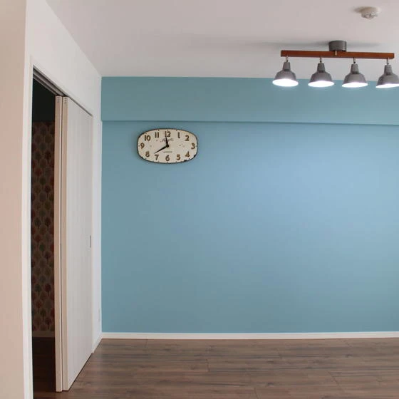
こんにちは。 富山県で自然素材にこだわった家づくりをしている 「フジ創アイノス」です。 今日はオシャレな雰囲気をだす部屋。 人気素材について。 １．「アクセントウォール」という言葉。 1-1 アクセントウォール❔ ・「ア
続きを読む →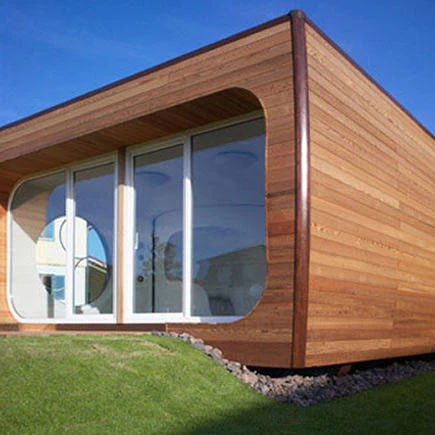
こんにちは。 富山県で自然素材にこだわった家づくりをしている 「フジ創アイノス」です。 いつもお世話になっております。 今回は、教えたいことをご紹介したいと思います。 「プレハブ住宅で防音リフォーム」可能❔ １，防音リフ
続きを読む →